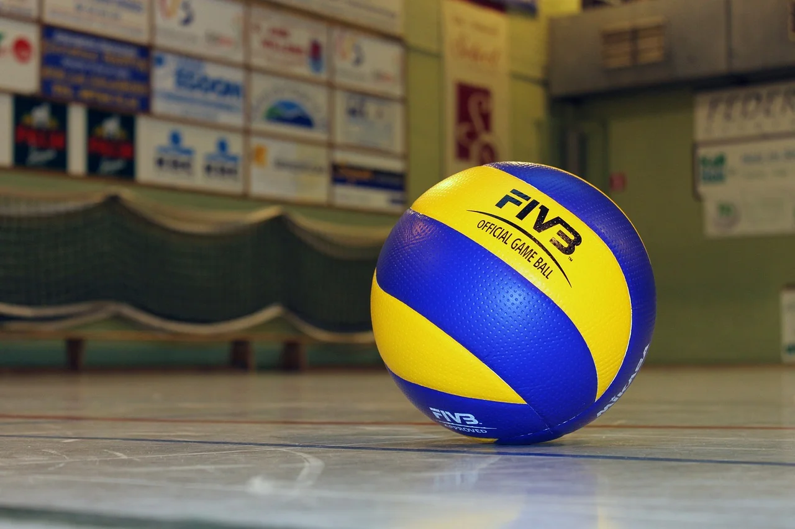
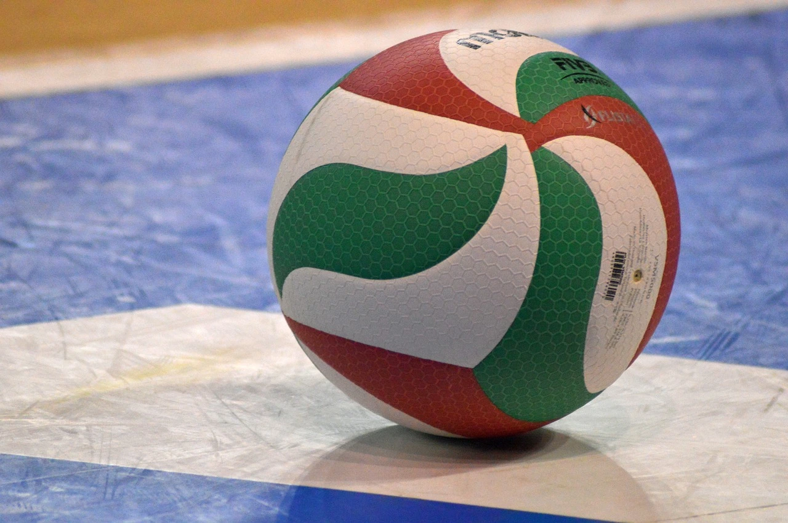

Welcome to the Vero Volley Monza fan run website! This website is dedicated to the SuperLega men's volleyball team, Vero Volley Monza, formerly known as Volley Milano. We are a passionate fanbase for the Milan area's largest volleyball club and created this website for fans to have an online platform to come together in support. Here, you will find the club's history with historical league finishes, overviews from our biggest rivals nationally and internationally, a short biography of our most prominent international players to help familiarize local fans with these newcomers, and the current status of all our standings in competitions.
History
Origins
The history of Vero Volley Monza, like many European volleyball teams, is convoluted and could easily be compared to the life cycle of a phoenix: living when they have sponsorship money, dying when that money dries up, and a rebirth when a new sponsor injects needed cashflow. The clubs origin can be traced back to 1973 under Volley Gonzaga after multiple clubs merged, notably Gonzaga (then the current youth champions) and CSI Milano, a blue-blooded former Italian champion. The club officially debuted in the top division in the 1976-77 season and achieved moderate success in the 1980s, notably crowned the CEV Cup champions in 1987.
Fininvest Group
The following season, Volley Gonzaga finished at the bottom of the standings. Fortunate to be playing in Milan at the time the football club AC Milan was at the peak of its power, the investment group Fininvest bought the team with the idea of creating a multi-sport club competing on multiple fronts, including volleyball, soccer, basketball, baseball, and rugby. The project was ultimately a failure, with only two 2nd place finishes coming in the 1992 and 1993 seasons, a CEV Winner's Cup and two runner-up medals, and two FIVB Volleyball Men's Club World Championship trophies in 1990 and 1992 to show for the investment made by Fininvest Group. The return on investment was not enough for Fininvest Group to continue the endeavour, and in 1995, they decided to pull out of their experiment.
Modern Era
The club immediately faced financial difficulties, sold its rights to MTA Padua, and was demoted to Serie B2. In 1999, the club separated from Volley Gonzaga and was renamed Volley Milano. The refurbished club gained promotion back to the top division in Italian men's volleyball in the 2000-01 season. Once again, due to financial constrictions, the team was forced to merge with Volley Piacenza until 2008. In 2008, Vero Volley was formed, breaking away from Volley Piacenza.
Today, Vero Volley Monza is alive and well, with the team in 6th place as of January 10, 2024.

Competitions
SuperLega
The SuperLega is the top division in professional Italian men's volleyball and is generally accepted as the second-best division for pro volleyball in Europe. Currently, Vero Volley Monza sits sixth in the table. The top four teams that finish in the SuperLega are granted bigger prize money and are automatically invited to play in international competitions.
Coppa Italia
The Coppa Italia is the domestic club trophy in Italy. This trophy can be won by any of the professional volleyball teams playing in Italy, regardless of their division. Vero Volley Monza are currently in the semi-finals, facing off against Trentino Volley. Watch Vero Volley Monza raise the domestic cup this year as they go on an underdog run!
CEV Challenge Cup
The CEV Challenge Cup is the third tier of international men's volleyball club competition. Like many cup competitions, the CEV Challenge Cup is a knockout competition. Vero Volley Monza is looking to be crowned champion of the Challenge Cup, as they are in the semi-finals this year!